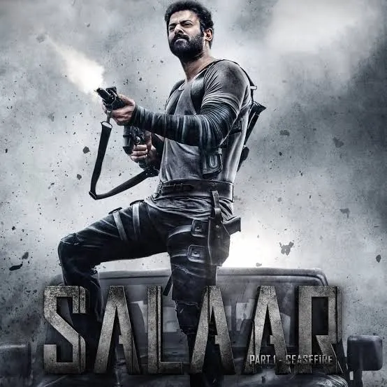
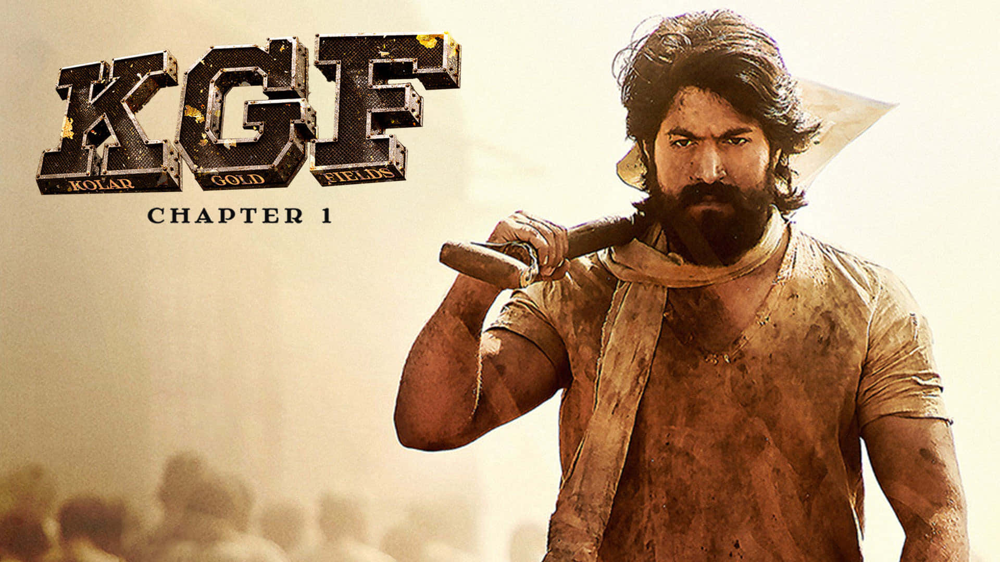

Salaar: Part 1 – Ceasefire is a high-octane action drama directed by Prashanth Neel, starring Prabhas and Prithviraj Sukumaran. Set in the brutal, fictional kingdom of Khansaar, the film follows the intense bond between two friends whose loyalty is tested by power, politics, and betrayal. Known for its dark tone, thunderous background score, and large-scale action sequences, the movie lays the groundwork for an epic saga centered on friendship and violence.

KGF: Chapter 1 is a gritty action drama directed by Prashanth Neel and stars Yash as Rocky, a fearless man driven by ambition and power. Set against the backdrop of the brutal Kolar Gold Fields, the film traces Rocky’s rise from poverty to dominance as he challenges oppression and tyranny. Known for its intense storytelling, powerful dialogues, stylized visuals, and electrifying background score, the movie redefined action cinema and laid the foundation for an epic two-part saga.